Panduan lengkap untuk Pengguna, Pengurus dan Admin
Versi dokumen
1.0
Sistem
SAICT iMohon
Peranan diliputi
Pengguna, Pengurus, Admin
Disediakan oleh
Seksyen Teknologi Maklumat
Kandungan
Pengenalan
1.1 Tujuan sistem
1.2 Peranan pengguna
1.3 Aliran kerja keseluruhan
1.4 Memahami lencana status
Memulakan Penggunaan
2.1 Mendaftar akaun baharu
2.2 Pengesahan e-mel
2.3 Log masuk
2.4 Lupa katalaluan
Panduan Pengguna
3.1 Papan pemuka
3.2 Mencipta permohonan baharu
3.3 Menambah item permohonan
3.4 Menghantar permohonan untuk kelulusan
3.5 Menjejak status permohonan
3.6 Menerima penghantaran peralatan
3.7 Menguruskan akaun
Panduan Pengurus
4.1 Senarai permohonan untuk kelulusan
4.2 Meluluskan permohonan
4.3 Menolak permohonan
Panduan Admin
5.1 Papan pemuka admin
5.2 Memproses permohonan
5.3 Mencipta permohonan agihan
5.4 Menetapkan maklumat penghantaran
5.5 Menguruskan inventori
5.6 Menguruskan pengguna dan jabatan
Lampiran
A. Rujukan status permohonan
B. Medan wajib bagi setiap borang
C. Masalah lazim
1. Pengenalan
1.1 Tujuan sistem
SAICT iMohon ialah sistem pengurusan permohonan dan agihan peralatan ICT.
Kakitangan menghantar permohonan peralatan (permohonan), yang kemudian
melalui rantaian kelulusan berperingkat sebelum peralatan diagihkan secara fizikal.
Sistem merekodkan setiap peringkat — daripada permohonan awal sehingga penghantaran
dan pengesahan penerimaan — dengan jejak audit yang lengkap.
Aplikasi untuk desktop
Sistem ini direka untuk paparan desktop. Jika dibuka pada telefon atau pada
tetingkap yang lebih kecil daripada 768 piksel, satu amaran akan dipaparkan.
Sila gunakan komputer desktop atau komputer riba.
1.2 Peranan pengguna
Setiap akaun diberikan satu peranan yang menentukan skrin yang boleh dicapai.
Peranan
Tanggungjawab
Pengguna
Mencipta permohonan, menambah item, menghantar untuk kelulusan, menjejak status dan mengesahkan penerimaan peralatan.
Pengurus
Meluluskan atau menolak permohonan daripada kakitangan dalam jabatan yang sama.
Admin
Memproses permohonan yang telah diluluskan pengurus, mencipta agihan, menetapkan maklumat penghantaran serta menguruskan inventori dan pengguna.
Pengarah
Meluluskan atau menolak permohonan agihan yang dihantar oleh Admin. Tidak diliputi dalam manual ini.
Sistem
Penyelenggaraan dan konfigurasi peringkat sistem. Tidak diliputi dalam manual ini.
1.3 Aliran kerja keseluruhan
Proses lengkap terbahagi kepada dua fasa.
Fasa 1 — Permohonan
Pengguna mencipta permohonan. Permohonan bermula sebagai Draf dan belum kelihatan kepada sesiapa.
Pengguna menambah satu atau lebih item, memilih Pengurus, dan menghantar permohonan.
Pengurus menyemak dan sama ada meluluskan atau menolak. Jika ditolak, aliran berakhir di sini.
Admin menerima permohonan yang diluluskan dan memprosesnya.
Admin memberikan kelulusan akhir. Permohonan kini sedia untuk agihan.
Fasa 2 — Agihan
Admin mencipta permohonan agihan bagi permohonan yang telah diluluskan.
Admin menetapkan item inventori tertentu kepada agihan tersebut.
Admin menghantar agihan kepada Pengarah untuk kelulusan.
Admin menetapkan maklumat penghantaran selepas kelulusan diperoleh.
Pengguna mengesahkan penerimaan peralatan, melengkapkan proses.
Jejak audit
Rekod kelulusan tidak pernah ditulis semula. Setiap keputusan menambah satu
rekod baharu, jadi sejarah penuh sesuatu permohonan sentiasa kekal.
1.4 Memahami lencana status
Warna lencana digunakan secara konsisten di seluruh sistem.
Lencana
Maksud
Draf
Belum dihantar. Masih boleh disunting atau dibuang oleh pemohon.
Menunggu
Sedang menunggu keputusan daripada pihak yang meluluskan.
Lulus
Diluluskan pada peringkat tersebut.
Gagal
Ditolak. Aliran kerja berhenti.
Nombor rujukan juga mengikut format yang tetap: permohonan menggunakan
MOHON-TAHUN-NNNN dan agihan menggunakan AGIHAN-TAHUN-NNNN,
contohnya MOHON-2026-0001. Nombor ini dijana secara automatik.
2. Memulakan Penggunaan
2.1 Mendaftar akaun baharu
Buka halaman sistem dan klik pautan pendaftaran.
Lengkapkan nama, nombor kad pengenalan, e-mel dan katalaluan.
Klik butang daftar. Satu e-mel pengesahan akan dihantar.
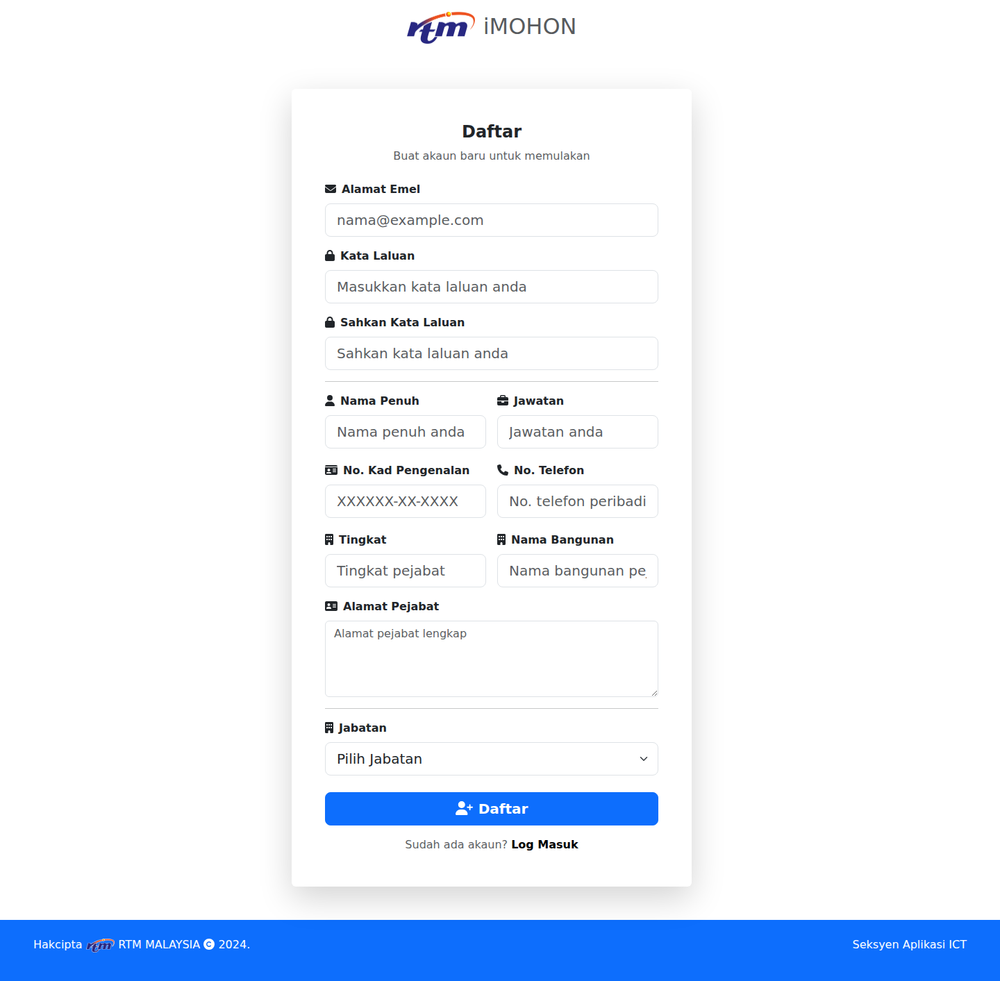
Rajah 3: Skrin pendaftaran pengguna baharu
2.2 Pengesahan e-mel
Akaun mesti disahkan sebelum boleh digunakan. Klik pautan di dalam e-mel yang
diterima. Jika anda log masuk sebelum pengesahan dibuat, satu kad amaran akan
dipaparkan dan skrin lain tidak boleh dicapai.
Tidak menerima e-mel?
Periksa folder spam terlebih dahulu. Jika masih tiada, hubungi Admin untuk
pengesahan secara manual.
2.3 Log masuk
Terdapat dua cara untuk log masuk.
Menggunakan e-mel
Masukkan alamat e-mel dan katalaluan anda.
Klik butang log masuk.
Rajah 1: Skrin log masuk menggunakan e-mel
Menggunakan nombor kad pengenalan
Masukkan nombor kad pengenalan dan katalaluan anda. Cara ini berguna bagi
kakitangan yang lebih mudah mengingati nombor kad pengenalan berbanding e-mel.
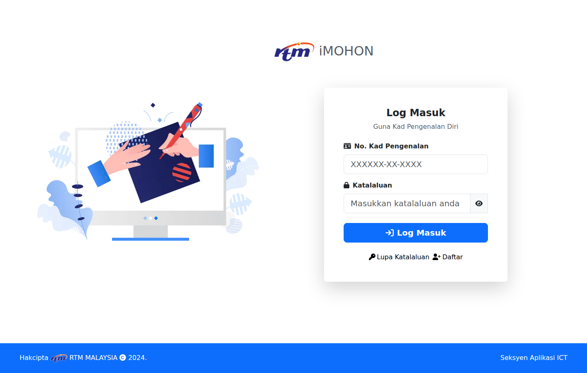
Rajah 2: Skrin log masuk menggunakan nombor kad pengenalan
2.4 Lupa katalaluan
Klik pautan lupa katalaluan pada skrin log masuk.
Masukkan alamat e-mel anda dan hantar.
Klik pautan set semula di dalam e-mel, kemudian masukkan katalaluan baharu.
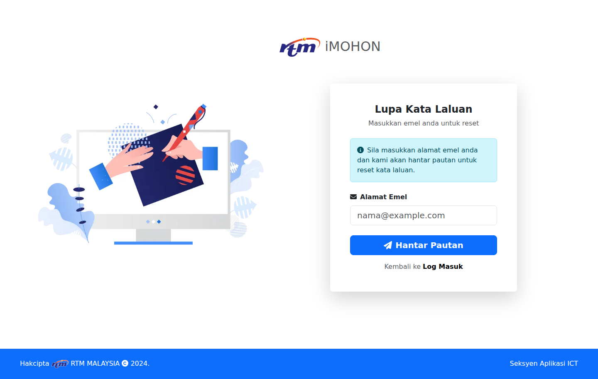
Rajah 4: Skrin permintaan set semula katalaluan
3. Panduan Pengguna Pengguna
3.1 Papan pemuka
Selepas log masuk, papan pemuka memaparkan ringkasan permohonan anda.
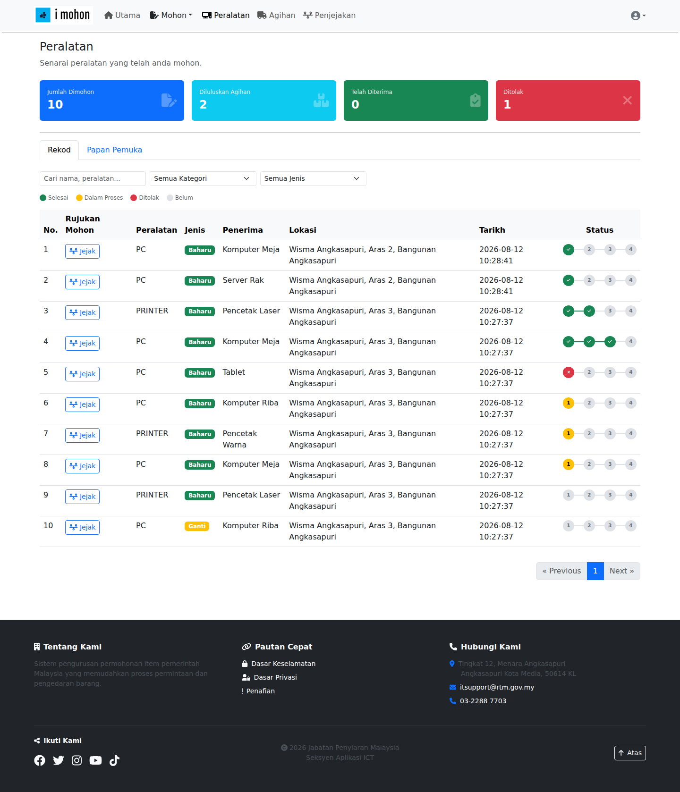
Rajah 5: Papan pemuka pengguna
3.2 Mencipta permohonan baharu
Pergi ke skrin senarai permohonan.
Klik butang untuk mencipta permohonan baharu.
Masukkan tajuk dan keterangan permohonan, kemudian simpan.
Permohonan yang baharu dicipta berstatus Draf.
Ia belum dihantar dan belum kelihatan kepada Pengurus.
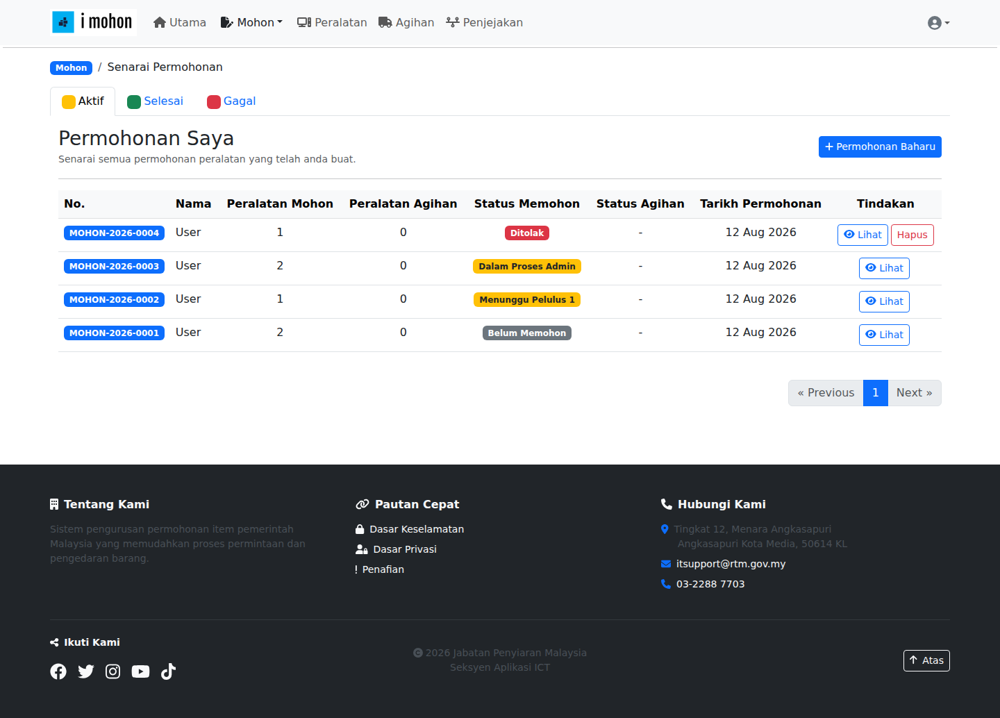
Rajah 6: Senarai permohonan, memaparkan sepuluh rekod bagi setiap halaman
3.3 Menambah item permohonan
Permohonan tanpa item tidak berguna. Buka permohonan draf tersebut dan tambah
sekurang-kurangnya satu item.
Klik pada permohonan untuk membuka skrin pengurusan item.
Klik butang tambah item.
Lengkapkan semua medan yang disenaraikan di bawah — kesemuanya wajib.
Simpan. Ulang bagi setiap item tambahan yang diperlukan.
Medan
Keterangan
Kategori
Jenis peralatan, contohnya PC atau PRINTER.
Jabatan
Jabatan yang memohon.
Jenis
Baharu untuk peralatan tambahan, atau Ganti untuk menggantikan peralatan yang rosak.
Nama item
Nama peralatan yang dimohon.
Jawatan
Jawatan pengguna yang akan menggunakan peralatan.
Nama bangunan
Bangunan tempat peralatan akan dipasang.
Tingkat
Tingkat di dalam bangunan tersebut.
No. telefon bimbit
Nombor untuk dihubungi semasa penghantaran.
Lokasi
Lokasi khusus, contohnya Bilik Server, Tingkat 3.
Keterangan
Justifikasi permohonan.
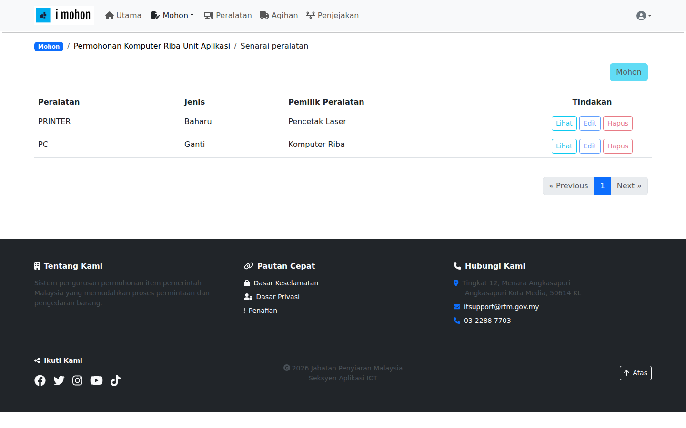
Rajah 7: Skrin pengurusan item bagi permohonan draf
3.4 Menghantar permohonan untuk kelulusan
Pastikan semua item telah ditambah dan betul.
Pilih Pengurus yang akan meluluskan permohonan. Medan ini wajib.
Tandakan kotak pengakuan untuk mengesahkan maklumat adalah benar.
Klik hantar.
Penghantaran tidak boleh dibatalkan
Sebaik permohonan dihantar, statusnya bertukar kepada
Menunggu dan anda tidak lagi boleh menyuntingnya.
Semak dengan teliti sebelum menghantar.
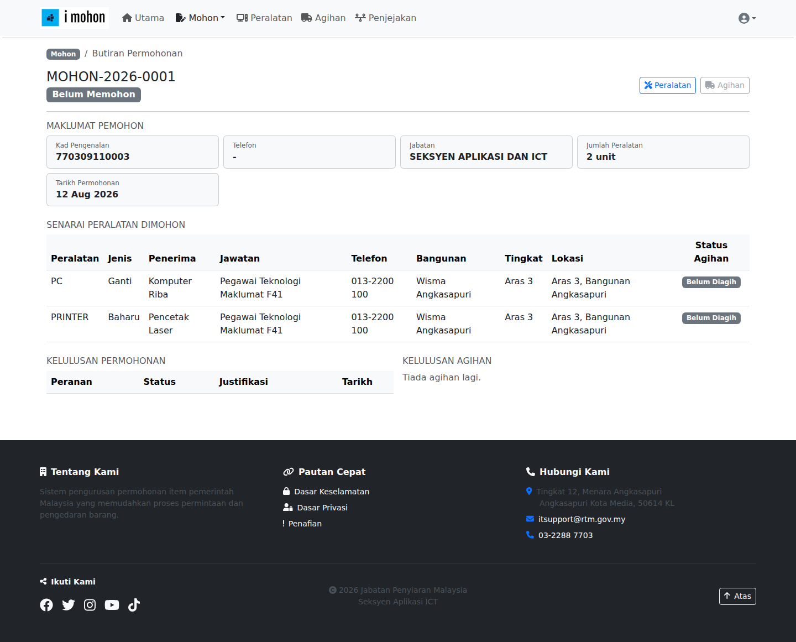
Rajah 8: Butiran permohonan draf sebelum dihantar
3.5 Menjejak status permohonan
Skrin penjejakan memaparkan peringkat semasa bagi setiap permohonan berserta
sejarah penuh kelulusan.
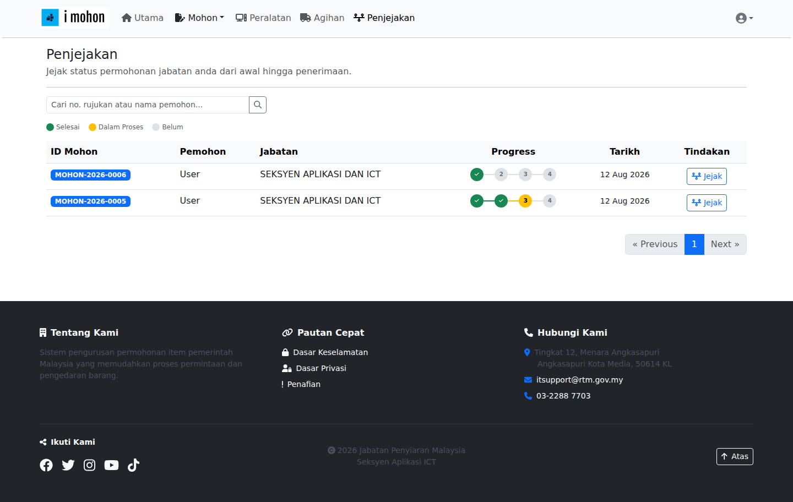
Rajah 11: Skrin penjejakan status permohonan
Jika permohonan ditolak, sebab yang diberikan oleh Pengurus atau Admin akan
dipaparkan pada butiran permohonan.
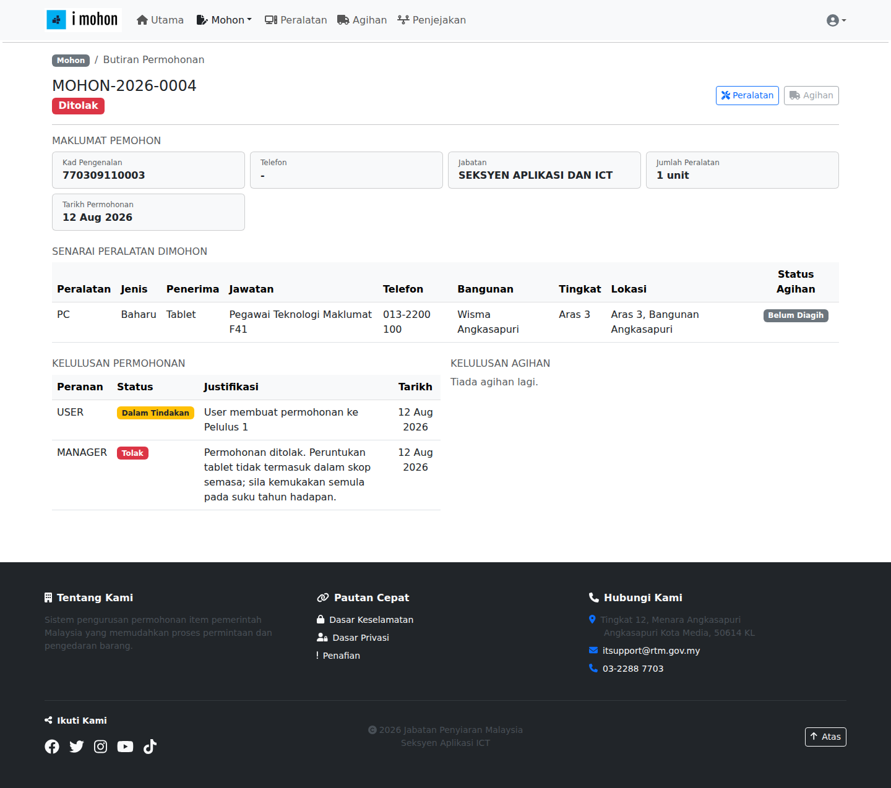
Rajah 9: Permohonan yang ditolak, berserta sebab penolakan
3.6 Menerima penghantaran peralatan
Setelah Admin menetapkan maklumat penghantaran, anda perlu mengesahkan
penerimaan peralatan.
Buka skrin agihan.
Cari item yang telah dihantar dan buka borang penerimaan.
Lengkapkan medan berikut — kesemuanya wajib:
Nombor siri peralatan yang diterima
Nama dan nombor telefon pegawai yang menghantar
Tarikh pemasangan
Catatan mengenai keadaan peralatan
Tandakan kotak pengakuan. Butang simpan hanya aktif selepas kotak ini ditandakan.
Klik simpan.
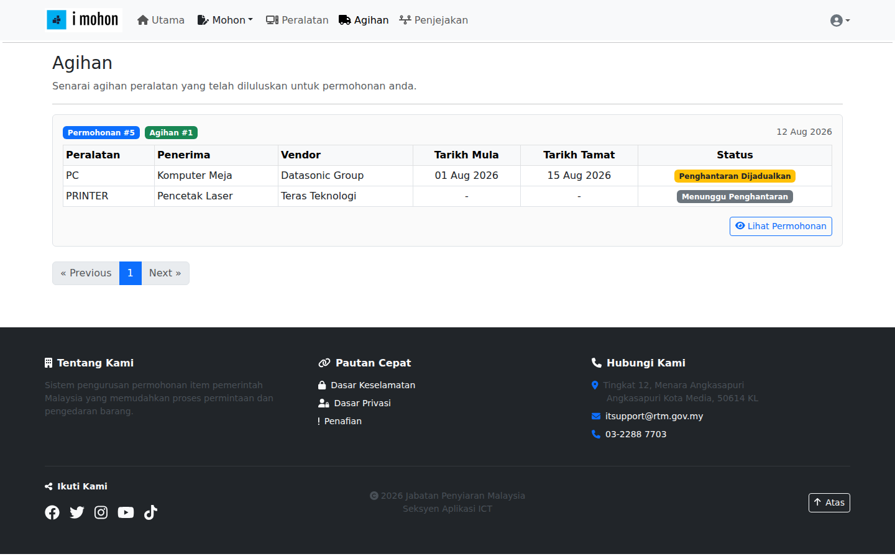
Rajah 12: Senarai agihan untuk pengguna
Proses selesai
Selepas penerimaan direkodkan, aliran kerja bagi permohonan tersebut lengkap.
3.7 Menguruskan akaun
Skrin akaun membolehkan anda mengemas kini butiran profil dan menukar katalaluan.
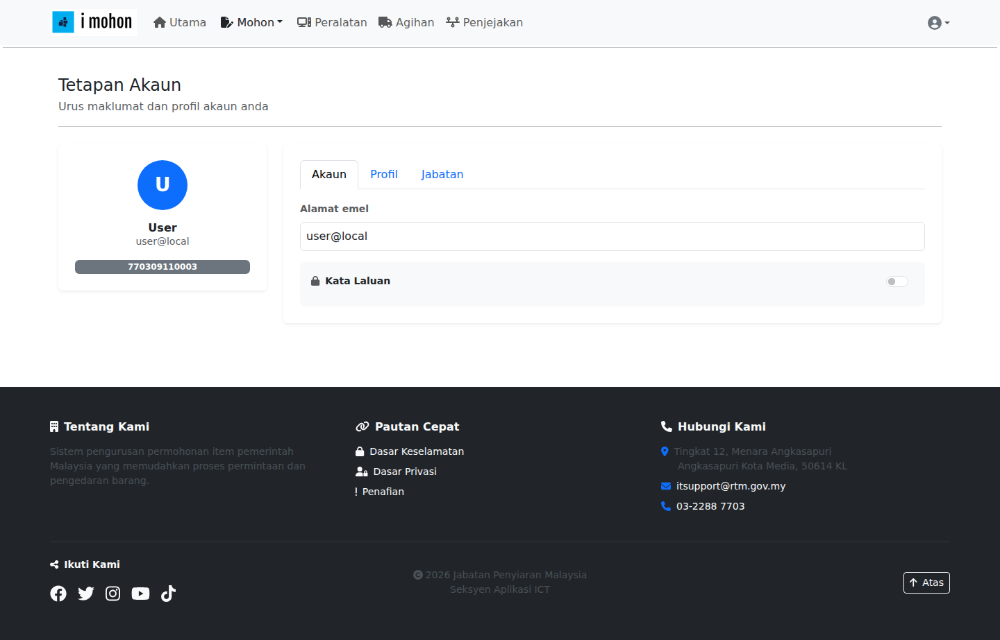
Rajah 14: Skrin tetapan akaun pengguna
4. Panduan Pengurus Pengurus
4.1 Senarai permohonan untuk kelulusan
Skrin kelulusan disusun dalam tiga tab.
Tab
Kandungan
Menunggu
Permohonan yang menunggu keputusan anda. Mulakan kerja di sini.
Lulus
Permohonan yang telah anda luluskan.
Gagal
Permohonan yang telah anda tolak.
Anda hanya melihat jabatan anda sendiri
Senarai ini hanya memaparkan permohonan daripada kakitangan dalam jabatan yang
sama dengan anda, dan yang secara khusus telah dihantar kepada anda oleh pemohon.
Jika sesuatu permohonan tidak kelihatan, kemungkinan pemohon telah memilih
Pengurus yang lain.
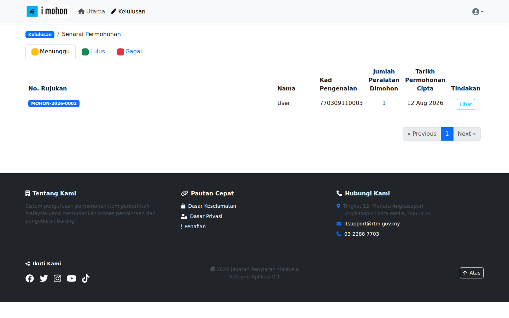
Rajah 16: Permohonan menunggu kelulusan pengurus
4.2 Meluluskan permohonan
Pada tab Menunggu, klik untuk membuka permohonan.
Semak item yang dimohon dan justifikasi yang diberikan.
Masukkan catatan jika perlu. Catatan tidak wajib bagi kelulusan.
Tandakan kotak pengakuan.
Klik butang lulus.
Kotak pengakuan adalah wajib
Sistem tidak akan menerima keputusan anda tanpa kotak pengakuan ditandakan.
Ini terpakai bagi kelulusan dan juga penolakan.
Permohonan yang diluluskan akan diteruskan kepada Admin untuk diproses.
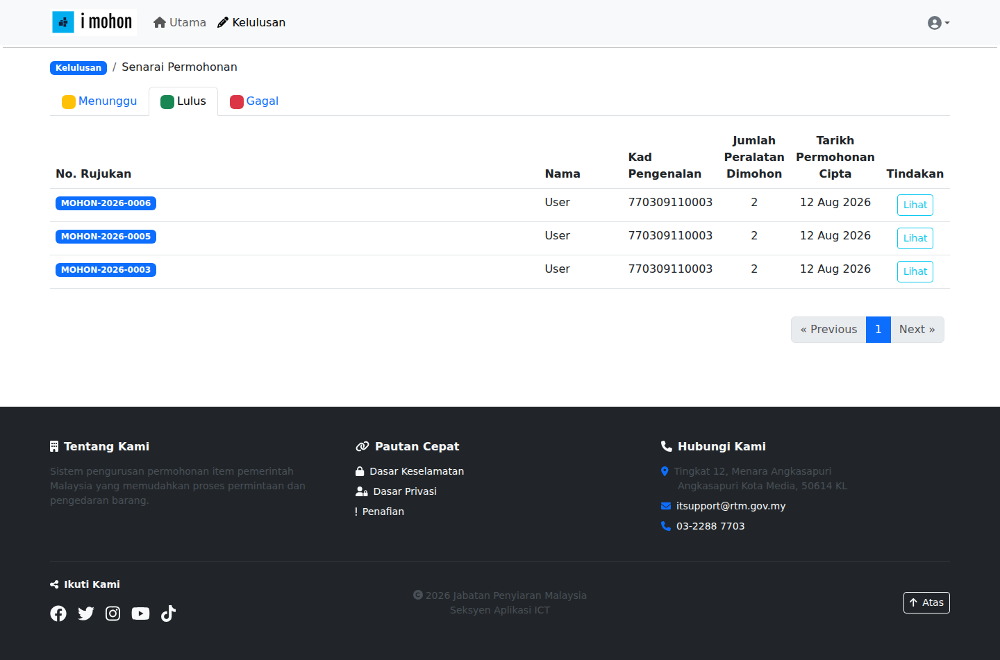
Rajah 17: Permohonan yang telah diluluskan pengurus
4.3 Menolak permohonan
Buka permohonan daripada tab Menunggu.
Masukkan sebab penolakan dalam medan catatan. Nyatakan dengan jelas —
pemohon akan melihat teks ini.
Tandakan kotak pengakuan.
Klik butang tolak.
Penolakan menamatkan aliran kerja
Permohonan yang ditolak tidak boleh dihidupkan semula. Pemohon perlu mencipta
permohonan baharu. Oleh itu, sebab penolakan yang jelas adalah penting.
Rajah 18: Permohonan yang telah ditolak pengurus
5. Panduan Admin Admin
5.1 Papan pemuka admin
Papan pemuka admin memaparkan ringkasan permohonan dan agihan di seluruh sistem.
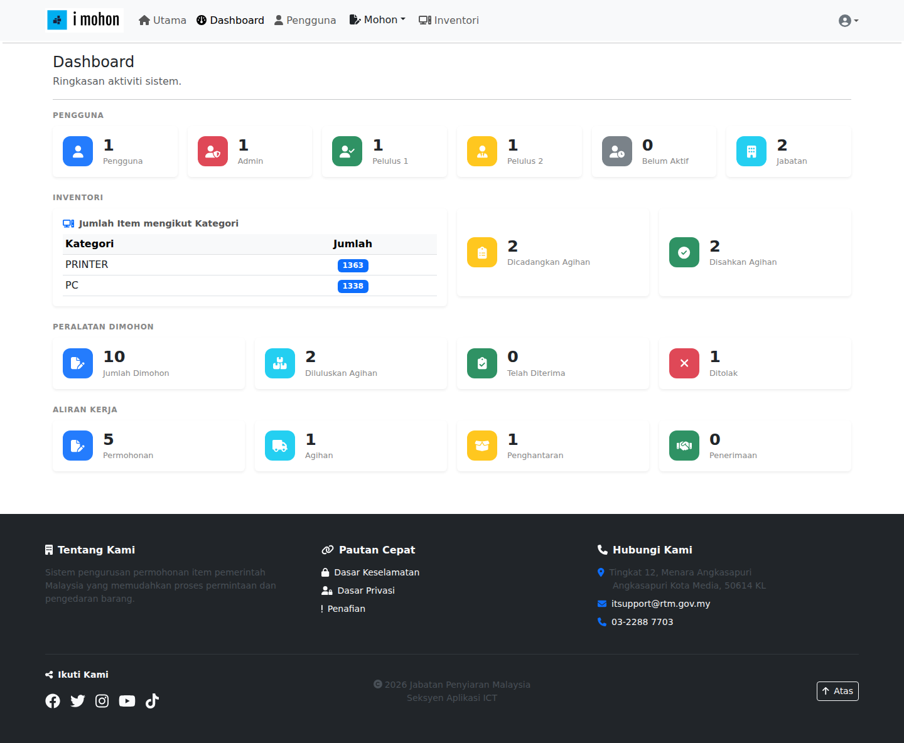
Rajah 19: Papan pemuka admin
5.2 Memproses permohonan
Permohonan yang telah diluluskan oleh Pengurus akan masuk ke dalam baris giliran
Admin di bawah tab Baharu.
Buka skrin kelulusan admin dan pilih tab Baharu.
Buka permohonan dan semak item yang diminta terhadap stok inventori yang ada.
Tandakan kotak pengakuan, kemudian luluskan atau tolak.
Kelulusan Admin merupakan keputusan akhir bagi Fasa 1. Permohonan tersebut
kini sedia untuk agihan.
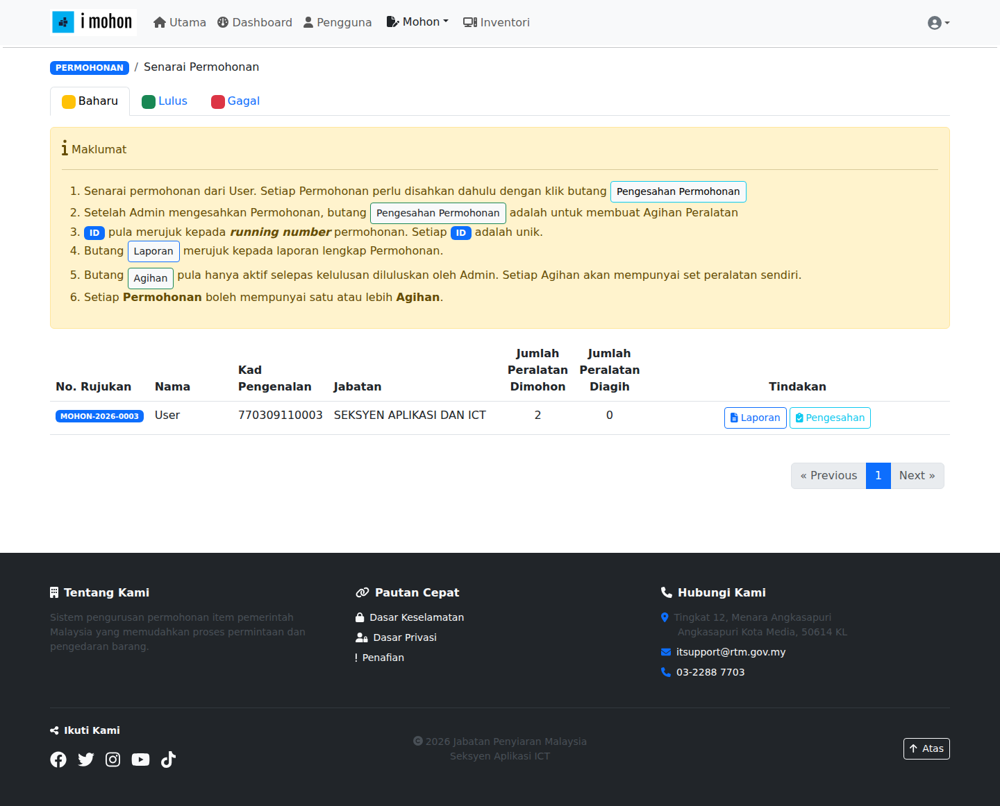
Rajah 20: Permohonan baharu untuk diproses admin
5.3 Mencipta permohonan agihan
Buka skrin agihan. Skrin ini menyenaraikan permohonan yang telah diluluskan sepenuhnya.
Pilih permohonan dan cipta satu permohonan agihan baharu. Nombor rujukan
AGIHAN-TAHUN-NNNN dijana secara automatik.
Tetapkan item inventori tertentu kepada setiap item yang dimohon. Pilih sama
ada jenis Baharu atau Ganti.
Hantar agihan kepada Pengarah untuk kelulusan.
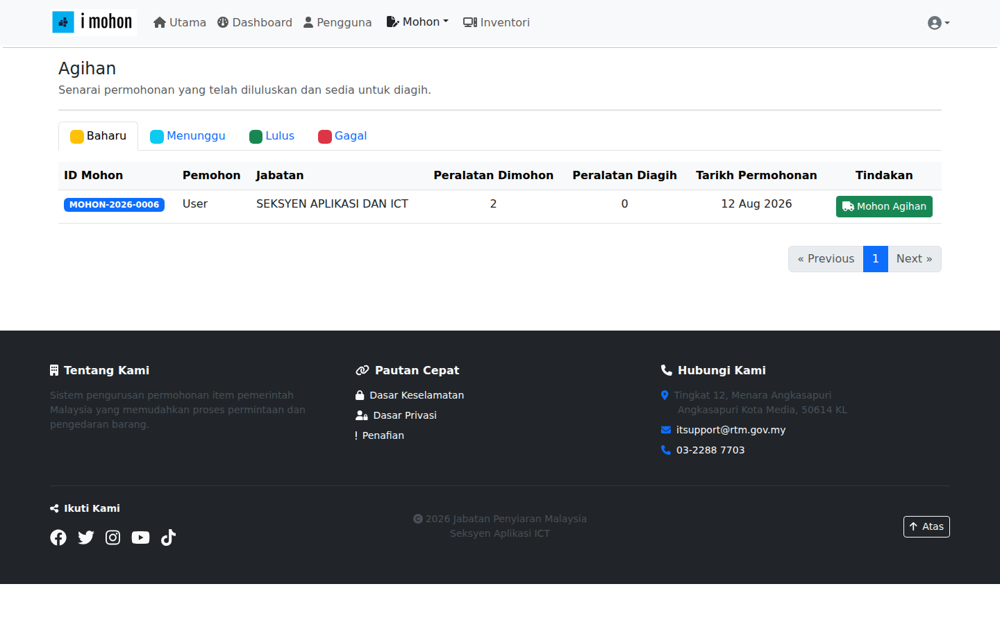
Rajah 23: Senarai permohonan yang sedia untuk agihan
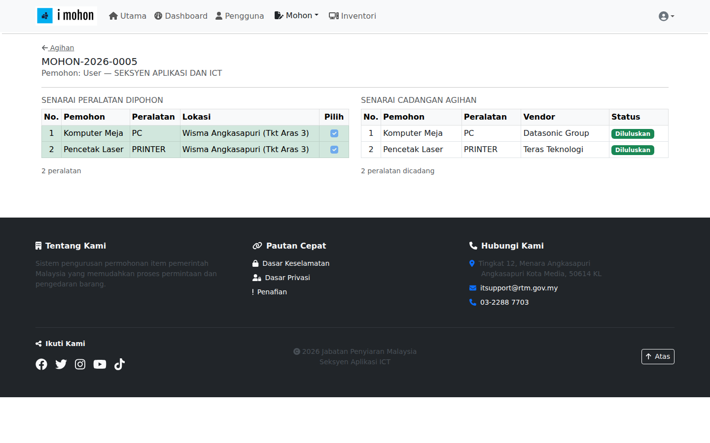
Rajah 24: Butiran agihan bagi satu permohonan
5.4 Menetapkan maklumat penghantaran
Selepas Pengarah meluluskan agihan, rekodkan cara peralatan akan dihantar.
Buka item agihan dan buka borang penghantaran.
Masukkan nama dan nombor telefon pegawai yang bertanggungjawab.
Masukkan tarikh mula dan tarikh tamat penghantaran.
Tandakan kotak pengakuan dan simpan.
Tarikh tamat mesti selepas tarikh mula
Sistem menolak borang jika tarikh tamat sama atau lebih awal daripada tarikh mula.
Setelah disimpan, pemohon akan melihat item tersebut pada skrin agihan mereka
dan boleh mengesahkan penerimaan.
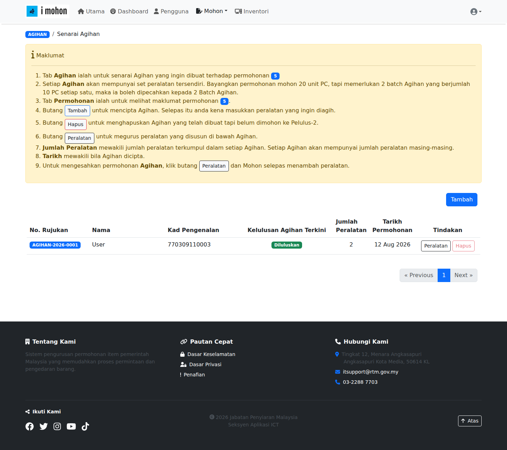
Rajah 25: Skrin permohonan agihan
5.5 Menguruskan inventori
Skrin inventori merekodkan peralatan yang tersedia untuk diagihkan, termasuk
maklumat kontrak dan pembekal.
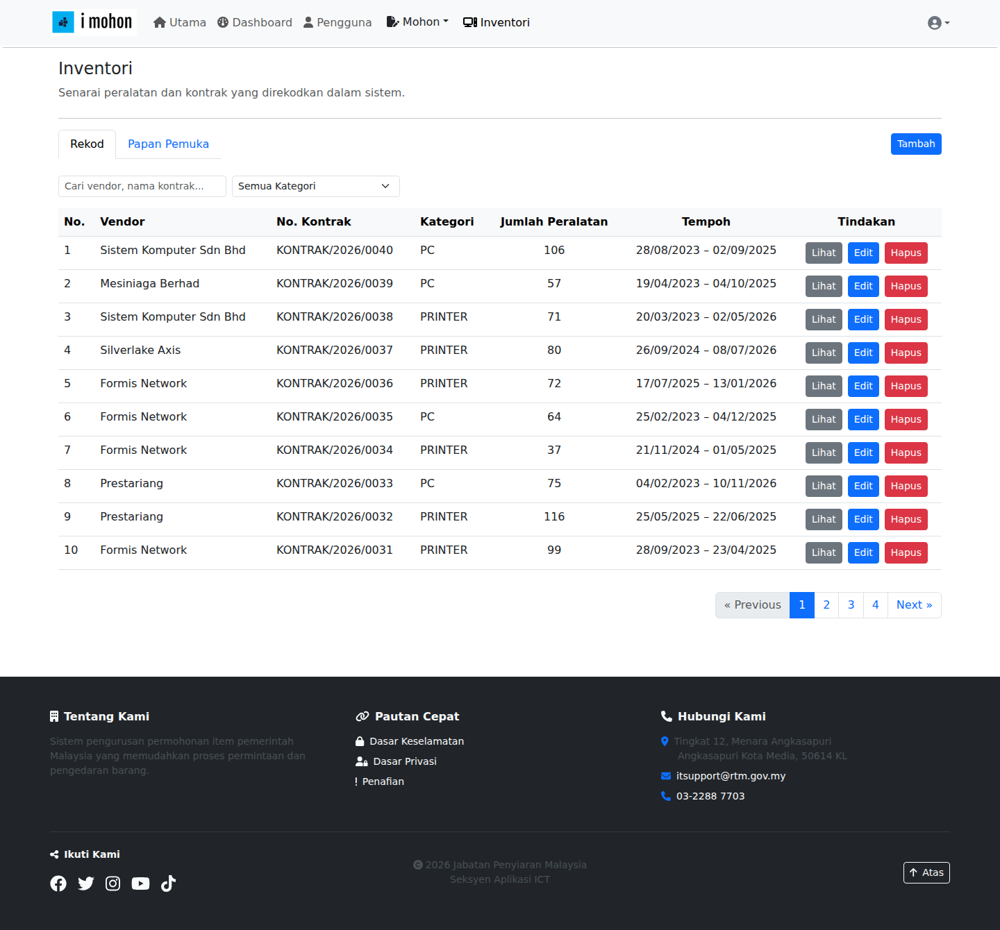
Rajah 27: Skrin pengurusan inventori
Kategori item disusun secara bersarang — contohnya ITEMS sebagai
kategori induk dengan PC dan PRINTER di bawahnya.
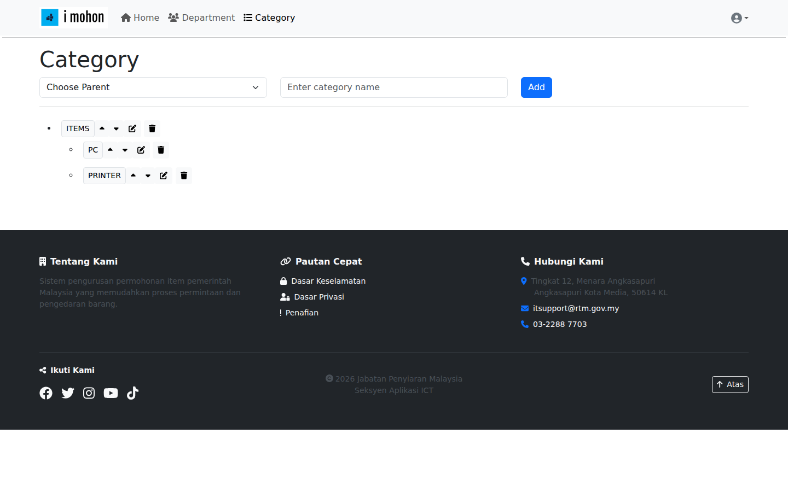
Rajah 28: Skrin pengurusan kategori item
5.6 Menguruskan pengguna dan jabatan
Admin boleh mencipta akaun, menetapkan peranan, dan menguruskan struktur jabatan.
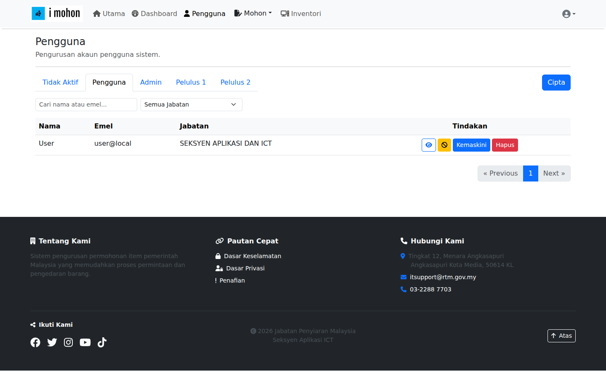
Rajah 29: Skrin pengurusan pengguna
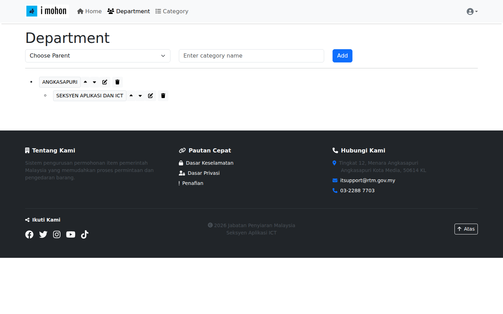
Rajah 30: Skrin pengurusan jabatan
Jabatan mempengaruhi kelulusan
Pengurus hanya melihat permohonan daripada kakitangan dalam jabatan yang sama.
Jika seorang pengguna diletakkan dalam jabatan yang salah, permohonannya tidak
akan sampai kepada Pengurus yang betul.
6. Lampiran
A. Rujukan status permohonan
Jadual berikut memperincikan setiap peringkat dalam aliran kelulusan permohonan.
Peringkat
Status
Maksud
Tindakan oleh
0
Menunggu
Draf, belum dihantar
Pengguna
1
Menunggu
Telah dihantar, menunggu Pengurus
Pengurus
2
Lulus / Gagal
Keputusan Pengurus
Pengurus
3
Menunggu
Dalam proses Admin
Admin
4
Lulus / Gagal
Keputusan akhir, sedia untuk agihan
Admin
Bagi fasa agihan:
Peringkat
Status
Maksud
0
Menunggu
Draf, Admin sedang menyiapkan agihan
1
Menunggu
Telah dihantar kepada Pengarah
2
Lulus / Gagal
Keputusan Pengarah
B. Medan wajib bagi setiap borang
Borang
Medan wajib
Tambah item permohonan
Kategori, Jabatan, Jenis, Nama item, Jawatan, Nama bangunan, Tingkat, No. telefon bimbit, Lokasi, Keterangan
Hantar untuk kelulusan
Pengurus, kotak pengakuan
Kelulusan Pengurus / Admin
Kotak pengakuan
Maklumat penghantaran (Admin)
Nama pegawai, No. telefon, Tarikh mula, Tarikh tamat (mesti selepas tarikh mula), kotak pengakuan
Pengesahan penerimaan (Pengguna)
Nombor siri, Nama pegawai, No. telefon, Tarikh pemasangan, Catatan, kotak pengakuan
C. Masalah lazim
Masalah
Penyelesaian
Amaran dipaparkan dan skrin tidak boleh digunakan
Sistem ini untuk desktop sahaja. Gunakan tetingkap pelayar yang lebih lebar daripada 768 piksel.
Tidak dapat log masuk selepas mendaftar
Akaun belum disahkan. Klik pautan pengesahan dalam e-mel, atau hubungi Admin.
Pengurus tidak nampak permohonan saya
Sahkan permohonan telah dihantar dan bukan lagi draf, dan Pengurus yang betul telah dipilih. Pengurus juga mesti berada dalam jabatan yang sama dengan anda.
Butang lulus atau tolak tidak berfungsi
Kotak pengakuan belum ditandakan. Kotak ini wajib.
Butang simpan pada borang penerimaan tidak aktif
Tandakan kotak pengakuan terlebih dahulu untuk mengaktifkan butang.
Borang penghantaran ditolak
Pastikan tarikh tamat adalah selepas tarikh mula.
Dilog keluar secara tiba-tiba
Token log masuk telah tamat tempoh. Log masuk semula.